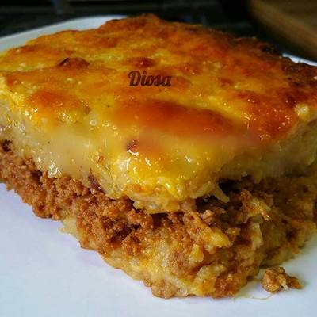

Pastelon de Platanos Maduros

This dish is called "pastelon de platanos maduros" ripe plaintain casserole in english
It consists in mashed plaintain, filled with meat (generally beef) and a coating of cheese
Ingredients
- Plaintains
- Meat of choice (If not sure, just use ground beef)
- Mozzarella Cheese
- Butter
- Milk cream
- Salt (amount depends on preference)
Recipe steps
- Cook the meat and boil the plaintains separately
- When the plaintains are well cooked, mash them with butter and milk cream
- In an oven plate, add a layer of plaintain, meat, plaintains and cheese
- Cook in oven
- Done!